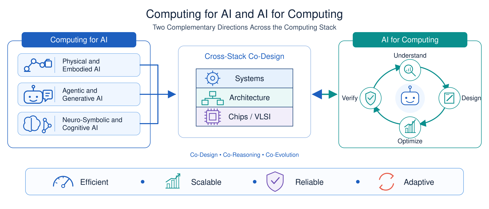

Research
Computing for AI, and AI for Computing
We study how to build computing systems for emerging intelligence, and how AI can help design computing systems. These two complementary directions span computer architecture, computer systems, and VLSI design, and share one methodology: cross-layer co-design for efficiency, scalability, reliability, and adaptability.
